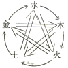
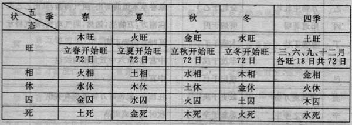
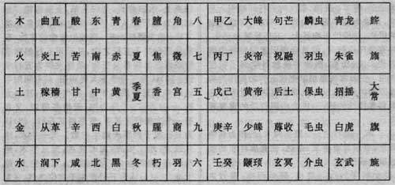

| 五行 | ||||||||||||||||||||||||||||||||||||||||||||||||||||||||||||||||||
| 一、五行由来 | ||||||||||||||||||||||||||||||||||||||||||||||||||||||||||||||||||
| 何谓五行？五行即是：金、木、水、火、土 | ||||||||||||||||||||||||||||||||||||||||||||||||||||||||||||||||||
| 六经论五行者，始见于《尚书·洪范》，曰：“五行，一曰水、二曰火、三曰木、四曰金、五曰木”。《大禹谟》曰：“水火金木土，谷惟修”。其源起于河图、洛书之数。益图书之一六水也，二七火也，三八木也，四九金也，五十土也。在图则左旋而相生，在书则右转而相克也。然土于图书为五十中宫之数，无定位，无专体者也。惟《吕氏春秋》则以土直季夏之月，以顺相生之序。《白虎通》又以土直辰戍丑未之四季而分旺于四时。文王后天图象坤艮二土独居夏秋冬春之交，则以火必得土而后能成金，水必得土而后能生木也。 | ||||||||||||||||||||||||||||||||||||||||||||||||||||||||||||||||||
| 行也者，言其行于地者也，质行于地而气通于天，数之有五焉，故曰五行也。地者、土也，以其对天言之则曰地，以其质言之固土也。土之为四行君也因也，君则不专其司，不居其部，是故以火之克金而秋乃承夏令也，则谓既有四方必有中央，而中央固土也。可以嗣火之老而生金也。以春秋冬夏之递嬗，四行转多而土转少也，则谓季月必辰戍丑未，而辰戍丑未固土也，减十二日以与本令余十八日为土王用事，则各七十二日也。坤艮二土居四气之交，为土之真体，则后天图象明之。乾巽二方据魁罡之户，示土之神用，则《素问·运气》详之。土之君乎四行也、审矣。然此犹皆为有象可示者也。若其无象可示者，则寅申巳亥子午卯酉实无一之离乎土焉。何也？非土则水火金木不能以行，其能以行者皆土也。 | ||||||||||||||||||||||||||||||||||||||||||||||||||||||||||||||||||
| 《三命通会》论五行生成云：天高寥廓，六气回旋以成四时；地厚幽深，五行化生以成万物。可谓无穷而莫测者也。圣人立法以推步者，盖不能逃其数。观其立数之因，亦皆出乎自然。故载于经典，同而不异，推以达其机，穷以通其变，皆不离于数内。一曰水，二曰火，三曰木，四曰金，五曰土者，咸有所自也。水，北方子之位也，子者，阳之初一，阳数也，故水曰一；火，南方午之位也，午者，阴之初二，阴数也，故火曰二；木居东方，东，阳也，三者，奇之数，亦阳也，故木曰三；金居西方，西，阴也，四者，偶之数，亦阴也，故金曰四；土应西南长夏，五者，奇之数，亦阳也，故土曰五。由是论之，则数以阴阳而配者也。若考其深义，则水生于一。天地未分，万物未成之初，莫不先见于水，故《灵枢经》曰：“太一者，水之尊号。先天地之母，后万物之源。”以今验之，草木子实未就，人虫、胎卵、胎胚皆水也，岂不以为一？及其水之聚而形质化，莫不备阴阳之气在中而后成。故物之小而味苦者，火之兆也；物熟则甘，土之味也。甘极而后淡，淡，本也。然人禀父母阴阳生成之化，故先生二肾，左肾属水，右肾属火。火曰命门，则火之因水而后见。故火曰次二。盖草木子实，大小虽异，其中皆有两以相合者，与人肾同，亦阴阳之兆。是以万物非阴阳合体则不能化生也。既阴阳合体，然后而春生而秋成，故次三曰木，次四曰金。盖水有所属，火有所藏，木有所发，金有所别，莫不皆因土而后成也。故金木水火皆待土而后成。兼其土数，五以成之，则水六，火七，木八，金九；土常以五之生数不可至十者，土不待十以成，是生成之数皆五以合之。明大衍之数，由是以立，则万物岂能逃其数哉？ | ||||||||||||||||||||||||||||||||||||||||||||||||||||||||||||||||||
| 二、五行生克 | ||||||||||||||||||||||||||||||||||||||||||||||||||||||||||||||||||
|
1、五行相生：金生水，水生木，木生火，火生土，土生金； 2、五行相克：金克木，木克土，土克水，水克火，火克金； |
||||||||||||||||||||||||||||||||||||||||||||||||||||||||||||||||||
|
 |
单箭头为相生 双箭头为相克 |
|||||||||||||||||||||||||||||||||||||||||||||||||||||||||||||||||
|
五行相生相克关系反映了古人对组成世界的五种基本物质元素的朴素直观感应： 1、金生水，是因为金属熔化后成为液体状态；水生木，是因为水可养树，树为木；木生火，是因为用木柴可以生火煮饭；火生土，是因为物质燃烧后留有灰烬；土生金，是因为金属物质皆产自地下土中。 2、金克木，是因为金属做成的刀器可以用来砍伐树木；木克土，是因古人用木制的工具耕种田地；土克水，是因为土可止水之流淌，犹如今之水库；水克火，是因为水能灭火；火克金，是因为火能熔化金属。 |
||||||||||||||||||||||||||||||||||||||||||||||||||||||||||||||||||
| 《三命通会》论五行生克：五行相生相克，其理昭然。十干十二支、五运六气、岁月日时皆自此立，更相为用，在天则为气：寒、暑、燥、湿、风；在地则成形：金、木、水、火、土。形气相感而化生万物，此造化生成之大纪也。原其妙用，可谓无穷矣。木主于东；应春。木之为言触也，阳气触动，冒地而生也。水流趋东以生木也；木上发而覆下，乃自然之质也。火主于南，应夏。火之为言化也，毁也，阳在上，阴在下；毁然盛而变化万物也。钻木取火，木所生也。然火无正体，体本木焉。出以应物，尽而复入，乃自然之气也。金主于西，应秋。金之为言禁也，阴气始禁止万物而收敛，披沙拣金，土所生也。生于土而别于土，乃自然之形也。水主于北，应冬。水之为言润也。阴气濡润，任养万物也。水西而东，金所生也。水流曲折，顺下而达，乃自然之性也。土主于中央，兼位西南，应于长夏。土之为言吐也，含吐万物，将生者出，将死者归，为万物家。故长于夏末，火所生也。土或胜水，水乃反土，自然之义也。五行相克，子皆能为母，复雠也。木克土，土之子金反克木；金克木，木之子火反克金；火克金，金之子水反克火；水克火，火之子土反克水；土克水，水之子木反克土。互能相生，乃其始也；互能相克，乃其终也。皆出乎天之性也。《素问》所谓水生木，木复生火，是木受窃气，故水怒而克火。即子逢窃气，母乃力争，与母被鬼伤，子来力救，其义一也。强可攻弱，土得木而达；实可胜虚，水得土而绝；阴可消阳，火得水而灭；烈可敌刚，金得火而缺；坚可制柔，木得金而伐。故五者流行而更转，顺则相生，逆则相克，如是则各各为用，以成其道而已。 | ||||||||||||||||||||||||||||||||||||||||||||||||||||||||||||||||||
| 三、五行的旺相休囚死状态 | ||||||||||||||||||||||||||||||||||||||||||||||||||||||||||||||||||
| 当令者旺，生我者相，我生者休，克我者囚，我克者死，具体如下表： | ||||||||||||||||||||||||||||||||||||||||||||||||||||||||||||||||||
|
||||||||||||||||||||||||||||||||||||||||||||||||||||||||||||||||||
|
 |
||||||||||||||||||||||||||||||||||||||||||||||||||||||||||||||||||
| 《神枢经》曰：“五行旺各有时，惟土居无所定，乃于四立之前各旺一十八日”。历例曰：“立春木，立夏火，立秋金，立冬水，各旺七十二日。土于四立之前各旺一十八日，合之亦为七十二日。总三百有六十而岁成矣”。 | ||||||||||||||||||||||||||||||||||||||||||||||||||||||||||||||||||
| 四、五行长生掌诀 | ||||||||||||||||||||||||||||||||||||||||||||||||||||||||||||||||||
|
||||||||||||||||||||||||||||||||||||||||||||||||||||||||||||||||||
|
"长生"就像人出生于世,或降生阶段,是指万物萌发之际. "沐浴"为婴儿降生后洗浴以去除污垢,是指万物出生,承受大自然沐浴. "冠带"为小儿可以穿衣戴帽了,是指万物渐荣. "临官"像人长成强壮,可以做官,化育,领导人民,是指万物长成. "帝旺"象征人壮盛到极点,可辅助帝王大有作为,是指万物成熟. "衰"指盛极而衰,是指万物开始发生衰变. "病"如人患病,是指万物困顿. "死"如人气已尽,形体已死,是指万物死灭. "墓"也称"库",如人死后归入于墓,是指万物成功后归库. "绝"如人形体绝灭化归为土,是指万物前气已绝,后继之气还未到来,在地中未有其象. "胎"如人受父母之气结聚成胎,是指天地气交之际,后继之气来临,并且受胎. "养"像人养胎于母腹之中,之后又出生,是指万物在地中成形,继而又萌发又得经历一个生生灭灭永不停止的天道循环过程. |
||||||||||||||||||||||||||||||||||||||||||||||||||||||||||||||||||
| 《考原》曰：“木长生于亥，火长生于寅，金长生于巳，水长生于申，土亦长生于申、寄生于寅，各由长长、沐浴、冠带、临官、帝旺、衰、病、死、墓、绝、胎、养顺历十二辰。盖天道循环，生生不已。故木方旺而火已生，火方旺而金已生，金方旺而水已生，水方旺而木已生。由长生而顺推，稚则必壮，盛则必衰，终而复始，迭运不穷。此四时之所以错行，五气之所以顺布也。至于土生于申而寄生于寅，则后天坤艮之位。故《易》于坤曰：‘万物皆致养成焉’，于艮曰：‘物之所成终而所成始也’”。 | ||||||||||||||||||||||||||||||||||||||||||||||||||||||||||||||||||
| 五行长生之义，《考原》之说甚明。而土之生于寅申，则引而未发。由今考之，水土之同生于申也，申为坤，坤为地，水土所以凝也；土之寄生于寅也，寅为孟春，孟春之月天气下降，地气上腾，天地所以和同，草木所以萌动也。是故洪范家独以土生于申为五行之体，阴阳选择诸家皆以土生于寅为五行之用。盖长生在寅则临官在巳，乃为土旺金生，与木火水同为一例。然则以土为生于寅者，所以顺五行相生之序，固与《月令》土旺于夏秋之交以顺四时相生之序者同出于理之自然而非为臆说也。外此又有阳死阴生，阳顺阴逆之说。甲木死于午则乙木生焉，丙戊死于酉则丁己生焉，庚金死于子则辛金生焉，壬水死于卯则癸水生焉。由长生而沐浴十二位皆逆转，阳死则阴生，阴死则阳生。此二气之分也。阳临官则阴帝旺，阴临官则阳帝旺。此四时之会也。顺逆分合俱极妙理。论十干则分阴阳，论五行则阳统阴，尤天地自然之义。故凡言数者祖之，此吉凶神煞所由起也。 | ||||||||||||||||||||||||||||||||||||||||||||||||||||||||||||||||||
| 五、五行总论 | ||||||||||||||||||||||||||||||||||||||||||||||||||||||||||||||||||
|
五行者，本乎天地之间而不穷者也，故谓之行。 北方阴极而生寒，寒生水。南方阳极而生热，热生火。东方阳散以泄而生风，风生木。西方阴止以收而生燥，燥生金。中央阴阳交而生温，温生土。其相生也所以相维，其相克也所以相制，此之谓有伦。 火为太阳，性炎上。水为太阴，性润下。木为少阳，性腾上而无所止。金为少阴，性沉下而有所止。土无常性，视四时所乘，欲使相济得所，勿令太过弗及。 夫五行之性，各致其用。水者其性智，火者其性礼，木其性仁，金其性义，惟土主信，重宽厚博，无所不容：以之水，即水附之而行；以之木，则木托之而生；金不得土，则无自出；火不得土，则无自归。必损实以为通，致虚以为明，故五行皆赖土也。 推其形色，则水黑、火赤、木青、土黄，此正色也。及其变易，则不然。常以生旺从正色，死绝从母色，成形冠带从妻色，病败从鬼色，旺墓从子色。 其数则水一、火二、木三、金四、土五。 生旺加倍，死绝减半。 以义推之，夫万物负阴而抱阳，冲气以和。过与不及，皆为乖道。故高者抑之使平，下者举之使崇，或益其不及，或损其太过。所以贵在折衷，归於中道，使无有余不足之累，即才官印食贵人驿马之微意也。行运亦如之，识其微意，则於命理之说，思过半矣。 |
||||||||||||||||||||||||||||||||||||||||||||||||||||||||||||||||||
|
||||||||||||||||||||||||||||||||||||||||||||||||||||||||||||||||||
| 六、五行逆克 | ||||||||||||||||||||||||||||||||||||||||||||||||||||||||||||||||||
| 天下万事万物就是在相生相克中达到动态平衡的，生到极点或是克到极点都会向相反的方向转化。此即为物极必反的原理，《三命通会》中说： | ||||||||||||||||||||||||||||||||||||||||||||||||||||||||||||||||||
| 金赖土生，土多金埋；土赖火生，火多土焦；火赖木生，木多火炽；木赖水生，水多木漂；水赖金生，金多水浊。 | ||||||||||||||||||||||||||||||||||||||||||||||||||||||||||||||||||
| 金能生水，水多金沉；水能生木，木盛水缩；木能生火，火多木焚；火能生土，土多火晦；土能生金，金多土散。 | ||||||||||||||||||||||||||||||||||||||||||||||||||||||||||||||||||
| 金能克木，木坚金缺；木能克土，土重木折；土能克水，水多土流；水能克火，火炎水热；火能克金，金多火熄。 | ||||||||||||||||||||||||||||||||||||||||||||||||||||||||||||||||||
| 金衰遇火，必见销熔；火弱逢水，必为熄灭；水弱逢土，必为淤塞；土弱遇木，必遭倾陷；木弱逢金，必为砍折。 | ||||||||||||||||||||||||||||||||||||||||||||||||||||||||||||||||||
| 强金得水，方锉其锋；强水得木，方泄其势；强木得火，方化其顽；强火得土，方止其焰；强土得金，方制其重。 | ||||||||||||||||||||||||||||||||||||||||||||||||||||||||||||||||||
| 七、五行源说 | |||
| 关于五行来源的学说。其说法不一。 | |||
| （1）《尚书·洪范》：“水曰润下，火曰炎上，木曰曲直，金曰从革，土爰稼穑”。据此以为五行是从具体事物中采用取象比类方法。抽象概括而来。将相似属性的事物、现象分别归属于五行之中，又运用五行解释事物或现象的联系及变化，最终发展为五行学说。 | |||
| （2）认为五行源于太极阴阳，或与阴阳学说同步。五行质具于地，行气于天，其一太极，一分为二、二分为四，天地各得四，又各有一个太极行于其中，便是两其五行。 | |||
| （3）认为五行源于河图天地生成数。天一生水，地六成之；地二生火，天七成之；天三生木，地八成之；地四生金，天九成之；天五生土，地十成之。 | |||
| （4）认为五行产生于方位之气。《素问·阴阳应象大论》：“东方生风，风生木”；“南方生热，热生火”；“中央生湿，湿生土”；“西方生燥，燥生金”；“北方生寒，寒生水”，尚有另说，但第一种说法较为流行。 | |||
| 八、五行易 | |||
| 援五行入易，以五行解易的学说。西汉焦赣、京房等将易卦配以五行、六亲以解说《易》，后世象数派宗之，建立严密、庞杂的五行易体系。 | |||
| 九、洪范五行说 | |||
| 《尚书·洪范》对水、火、木、金、土五行的认识，为现存最早的有关五行学说的文献记载。认为：“水曰润下，火曰炎上，木曰曲直，金曰从革，土爰稼穑”。把五行概念从具体事物中抽象出来。水，代表具有润下功能的事物；火，代表具有炎上功能的事物；木，代表具有曲直（疏泄）功能的事物；金，代表具有从革（肃杀）功能的事物；土，代表具稼穑（滋生）功能的事物。反之，具有润下功能的都称之为“水”，具有炎上功能的都可称为“火”，具有曲直功能的可称为“木”，具有从革功能仍可称为“金”，具有稼穑功能的都可称为“土”。以之作为分类归纳繁杂客观事物的标准。有人认为五行分类思想本于《周易“方以类聚，物以群分”的认识及对事物进行易卦分类的实践。 | |||
| 十、吕氏春秋五行说 | |||
| 战国时期〈吕氏春秋·十二纪〉以五行表述世界体系的学说。《周易》一书专道阴阳，不谈“五行”，后世用“五行”、“纳甲”等解释《周易》者，大抵以此为思想基础。 | |||
|
 |
|||
| 十一、京氏五行说 | |||
| 西汉京房以五行解释《周易》的学说。《系辞》、《说卦》虽讲天地之数，以五为贵，但真正以五行解易者始于京氏。《京氏易传》：“生吉凶之义，始于五行，终于八卦”。其说有三：（1）五星配卦。五星为土星镇，金星太白，水星太阴，木星岁，火星荧惑。六十四按八宫卦次序，各配以土、金、水、木、火五星，周易而复始。如乾为镇星（土），姤为太白星（金，遁为太阴星（水），否为岁星（木），观为荧惑星（火），直至归妹为岁星（木）。解释每卦都用“五星从位起某某”语，并以此说解人事吉凶。取法于当时天文学占星术（《淮南子·天文训》、《史记、天官书》有所记载），本于《周易·说卦》取象、取义说。（2）五行爻位。以五行配八宫卦和卦中各爻。认为：“八卦分阴阳，六位配五行”。其法以爻配地支，再配五行。以此解说《周易》。如解姤卦：“阴爻用事，金木互体，天下风行曰姤”。解释姤初六爻：“木入金为始，阴不能制于阳，附于金柅，易之柔道牵也。五行升降，以时消息，阴荡阳，降八遁”。本于《月令》五行配四时十二月说。（3）卦爻五行生克。以八宫卦为母，以其爻位为子，按五行关系，确定母子之间的相生或相克。如乾为母，为金，其初爻为水，母子是金生水关系，称为福德；其二爻为木，母子是金克木关系，称为宝贝；其三爻为土，母子是土生金关系，称为父母；其四爻为火，母子是火克金关系，称为鬼或官鬼；其五爻为金，母子皆为金，称为同气。其上爻为土，母子是土生金关系，称为父母。又认为：“八卦鬼为系爻，财为制爻，天地为义爻，福德为宝爻，同气为专爻”。以五行生克论卦爻象及人事吉凶。本于《淮南子·天文训》：“水生木，木生火，火生土，土生金，金生水。子生母曰义，母生子曰保，子母相得曰专，母胜子曰制，子胜母曰困。以胜南杀，胜而无极。以专从事，专而有功。以义行理，名立而不堕。以保畜养，万物蕃昌。以困举事，破灭灭亡”。 | |||
| 十二、郑氏五行说 | |||
| 又称“五行生成说”。东汉郑玄以五行解释《周易》筮法及象数的学说。本于刘歆《三统历》五行数说，京房五行爻位说、《礼记·月令》五行四季说、《太玄》五行配时说等。认为水、火、土、金、木 五行之数分别为一、二、三、四、五和六、七、八、九、十，前者为生数，后者为成数。并以此解释《周易·系辞》天地之数、大衍之数及《周易》义理。其解释天地之数：“数者五行，佐天地生数成物之次也。易曰：天一地二，天三地四，天五地六，天七地八，天九地十。而五行自水始，火次之，木次之，金次之，土为后。木生数三，成数八，但言八者举其成数”。（《礼记正义·月令》）其解释《系辞》“五位相得各有合”：“天地之气各有五。五行次之，一曰水，天数也；二曰火，地数也；三曰木，天数也；四曰金，地数也；五曰土，天数也。此五者，阴无匹，阳无隅，故又合之。地六为天一匹也，天七为地二隅也，地八为天三匹也，天九为地四隅也，地十为天五匹也，二五阴阳各有合，然后气相得，施化行也”。（《春秋疏》引）。其解释大衍之数：“天一生水于北，地二生火于南，天三生木于东，地四生金于西，天五生土于中。阳无偶，阴无配，未得相成。地六成水于北，与天一并；天七成火于南，与地二并；地八成木于东，与天三并；天九成金于西，与地四并；地十成土乎中，与天五并也，大衍之数五十有五，五行各气并，气并而减五，惟有五十。以五十之数不可以为七八九六，卜筮之占以用之，故更减其一，故四十有九也”。（《礼记正义·月令疏》引）解释天地之数：“天地之数五十有五，以五行气通，凡五行减五，大衍又减一，故四十九也”。（《周易正义》引）五行生成说是五行相生和卦气相结合的产物。其将大衍之数看成是五行之气生化万物的法则，将筮法中的阴阳奇偶之数推衍为五行之气的生数和成数，以天之五数与地之五数“二五阴阳之合”说明万物的形成。认为天地之数与大衍之数相一致，后者源于前者。以五行相生为核心，通过易学形式，构造一个具有数的规定性的时空模式，有一定的哲学意义。 | |||
| 十三、五行次序 | |||
|
|||
| 十四、五行归类 | |||
|
|||
| 十五、五行用事 | |||
|
|||
| 十六、五行始生 | |||
| 指五行的生化之序。始生于水，依次为水、火、木、金、土。本于《尚书·洪范》：“五行，一曰水，二曰火，三曰木，四曰金，五曰土”。《传》：“皆其生数”。《疏》：“天一生水，地二生火，天三生木，地四生金，天五生土，此其生数也”。此视序数为生数。后世进一步解释。《关氏易传》：“五行，水生乎一成乎六，火生乎二成乎七，木生乎三成乎八，金生乎四成乎九，土生乎五成乎十”。《易学启蒙》：“天一生水，地六成之；地二生火，天七成之；天三生木，地八成之；地四生金，天九成之；天五生土，地十成之”。 | |||
| 十七、五行制化 | |||
| ①指五行在正常情况下的相生相克关系。制为克制，化为化生。《素问·六微旨大论》：“制则生化。”化生和克制相互为用，事物生中有克、克中有生，才能维持其相对的平衡协调。这种生克关系，称为制化。举木为例，木能克土，但土能生金，金又能克木，通过这种调节，使木既不过度克土，又不过度被金克。其余类推。 |
| ②指五行中三三“行”之间的亢害承制关系。《素问·六微旨大论》：“亢则害，承乃制，制则生化。”明张介宾《类经图翼》：“母之败也，子必救之，如水之太过，火受伤矣，火之子土，出而制焉。火之太过，金受伤矣，金之子水，出而制焉，金之太过，木受伤矣，木之子火，出而制焉。木之太过，土受伤矣，土之子金，出而制焉。土之太过，水受伤矣，水之子木，出而制焉。盖造化之机，不可无生，亦不可无制。” | |||
| 十八、亢害承制 | |||
| 指五行亢盛之极而为害，必须抵御令其节制，方能维持事物的正常生发。语出《素问·六微旨大论》：“亢则害，承乃制，制则生化。”亢，亢盛。害，危害。承，抵御。制，压制、节制。明张景岳《类经》：“亢者，盛之极也。制者，因其极而抑之也。盖阴阳五行之道，亢极则乘，而强弱相残矣。所以亢而过甚，则害乎所胜，而承其下者，必从而制之······夫盛极有制，则无亢害，无亢害则生化出乎自然。” | |||
| 十九、五行乘侮 | |||
|
|||
| 二十、五行相乘 | |||
| 亦称“五行亢乘”指五行中某“一行”对被克的“克制太过，从而引起异常相克反应。“乘”有以强凌弱、乘虚侵袭 | |||
|
|||
| 二十一、五行相侮 | |||
|
|||
| 二十二、五行胜复 | |||
|
|||
| 二十三、五德终始 | |||
| 亦称“五德转移”。战国时代邹的历史循环学说。以金、木、水、火、土五行之德配于各朝代，认为改朝换代就是五德的相生、相克和终始循环。《史记·孟子荀卿列传》：“邹衍睹有国者益淫移、不尚德······称引天地剖判以来，五德转移，治各有宜，而符应若兹。”五行配帝王之德有二法：一为依五行相生之顺序，伏羲氏（木）、神农氏（火）、轩辕氏（土）、金天氏（金）、高阳氏（木）、尧（火）、舜（土）、禹（金）、商（水）、周（木）、汉（火）。二为依五行相胜（克）之顺序，周火德，则秦以水德代之；秦水德，则汉又以土德代之。西汉京房则将此与《易》六十四卦及寒、温、风、雨相配，并以此解说一切灾异。 | |||
| 二十四、五行阵 | |||
| ①指方、圆、曲、折、锐五种阵法。《李卫公问对》：“太宗曰：五行阵如何？靖曰：本因五方色立此名，方、圆、曲、折、锐，实因地势使然。凡军不习此五者，安可以临敌乎？后，诡道也，故强名五行焉”。②指五行配属方物的图式。 |
http://www.zhqmdj.com/homepage/wangye/yxjc/wuxing/wuxing.htm